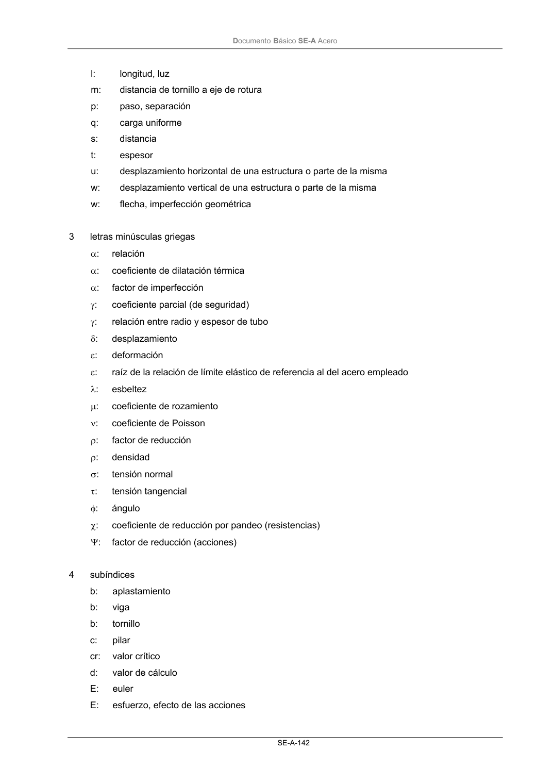
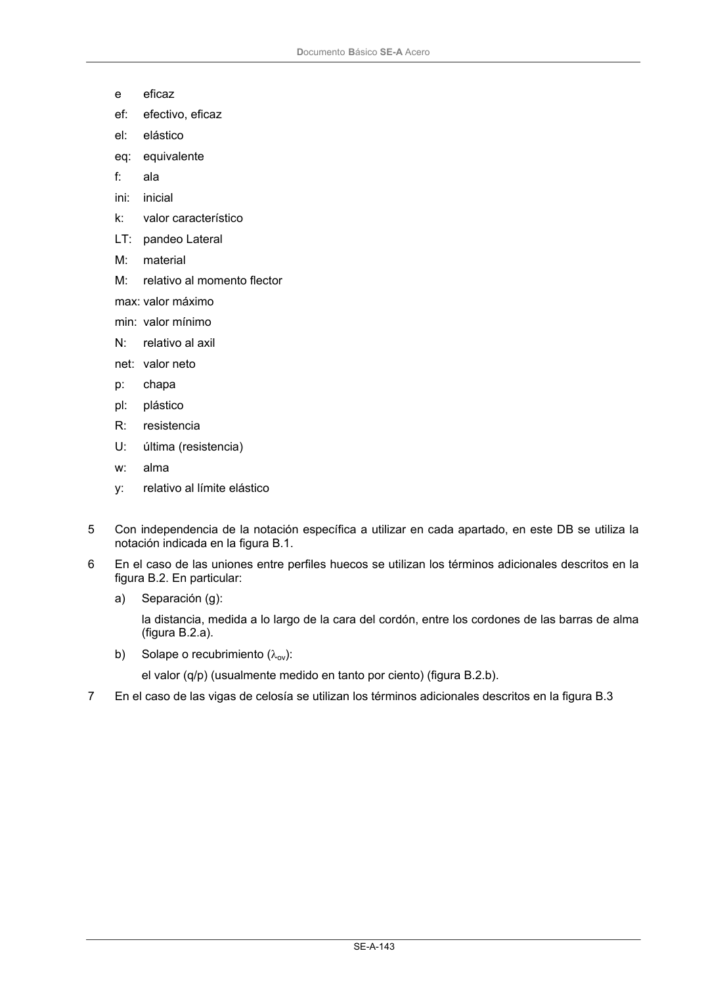
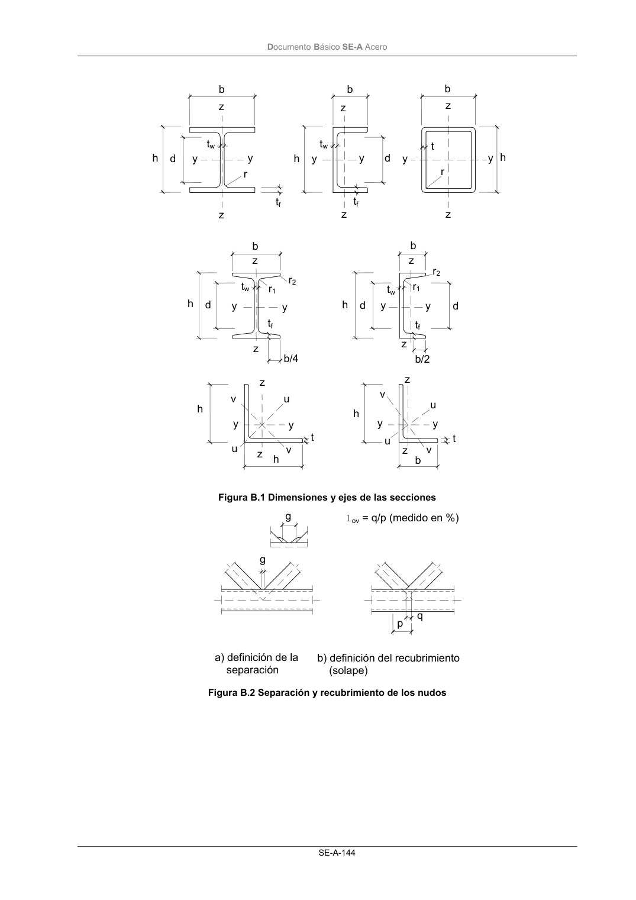
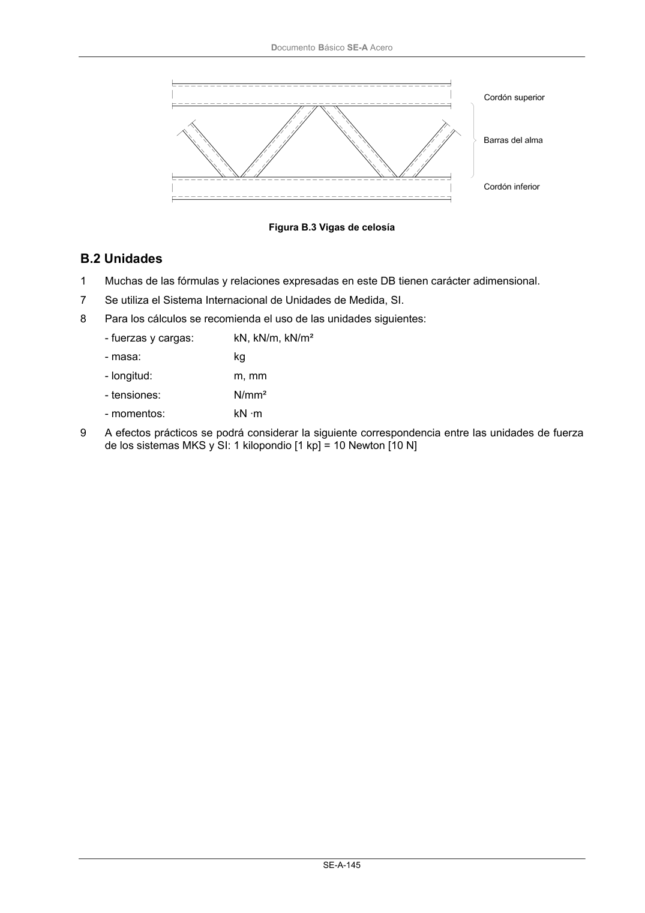

DB-SE-A · Fragmento de PDF p143 · versión 2007-10-23 · capa oficial
Formatos: JSON compacto · Markdown · PDF fuente
Ámbito del documento · texto del ámbito · documento y tablas
ID técnico a0207 · PDF pág. 143-147 · jerarquía no validada por persona · no es capítulo: sin_linea_de_encabezado · padre: raíz · literal original en el contenido: «Anejo B. Notación y Unidades B.1 Notación»
Anejo B. Notación y Unidades B.1 Notación B.1 Notación 1 letras mayúsculas latinas A: área A: valor de acción accidental E: módulo de Elasticidad E: efecto de una acción (con subíndices) F: acción G: módulo de elasticidad transversal G: valor de acción permanente I: momento de Inercia L: longitud, luz M: momento flector N: esfuerzo axial Q: valor de acción variable R: resistencia (capacidad resistente) (con subíndices) S: acero (designación) T: momento torsor S: rigidez V: esfuerzo cortante W: módulo resistente 2 letras minúsculas latinas a: distancia a: garganta de un cordón b: ancho (usualmente de una sección) c: ancho (usualmente del ala de una sección) d: diámetro d: canto (usualmente de alma de una sección) e: imperfección geométrica e: distancia de tornillo a borde de chapa f: flecha f: resistencia f: frecuencia h: altura h: canto (usualmente de una sección) i: radio de giro de una sección DocumentoBásico SE-A Acero SE-A-142 l: longitud, luz m: distancia de tornillo a eje de rotura p: paso, separación q: carga uniforme s: distancia t: espesor u: desplazamiento horizontal de una estructura o parte de la misma w: desplazamiento vertical de una estructura o parte de la misma w: flecha, imperfección geométrica 3 letras minúsculas griegas α: relación α: coeficiente de dilatación térmica α: factor de imperfección γ: coeficiente parcial (de seguridad) γ: relación entre radio y espesor de tubo δ: desplazamiento ε: deformación ε: raíz de la relación de límite elástico de referencia al del acero empleado λ: esbeltez µ: coeficiente de rozamiento ν: coeficiente de Poisson ρ: factor de reducción ρ: densidad σ: tensión normal τ: tensión tangencial φ: ángulo χ: coeficiente de reducción por pandeo (resistencias) Ψ: factor de reducción (acciones) 4 subíndices b: aplastamiento b: viga b: tornillo c: pilar cr: valor crítico d: valor de cálculo E: euler E: esfuerzo, efecto de las acciones DocumentoBásico SE-A Acero SE-A-143 e eficaz ef: efectivo, eficaz el: elástico eq: equivalente f: ala ini: inicial k: valor característico LT: pandeo Lateral M: material M: relativo al momento flector max: valor máximo min: valor mínimo N: relativo al axil net: valor neto p: chapa pl: plástico R: resistencia U: última (resistencia) w: alma y: relativo al límite elástico 5 Con independencia de la notación específica a utilizar en cada apartado, en este DB se utiliza la notación indicada en la figura B.1. 6 En el caso de las uniones entre perfiles huecos se utilizan los términos adicionales descritos en la figura B.2. En particular: a) Separación (g): la distancia, medida a lo largo de la cara del cordón, entre los cordones de las barras de alma (figura B.2.a). b) Solape o recubrimiento (λov): el valor (q/p) (usualmente medido en tanto por ciento) (figura B.2.b). 7 En el caso de las vigas de celosía se utilizan los términos adicionales descritos en la figura B.3 DocumentoBásico SE-A Acero SE-A-144 Figura B.1 Dimensiones y ejes de las secciones Figura B.2 Separación y recubrimiento de los nudos h d y y r z z b b b z z z z h h y y r y y tf tf tw tw t d h d y y h d y y d tw r2 r1 z z b/2 tf b/4 tf r2 b b z z r1 tw h h z z v v u u y y t t h b v v z z u u y y g g lov = q/p (medido en %) q p a) definición de la separación b) definición del recubrimiento (solape) DocumentoBásico SE-A Acero SE-A-145 Figura B.3 Vigas de celosía




PDF fuente redistribuible: copia fiel enlazada en esta página (SHA256 verificado).